The Update Setting Software: https://sikaicase.com/blogs/support/setting-for-software.
The Old Wired version Software:https://sikaicase.com/blogs/news/before-software-setting.
(Setting need connect the USB-C Cable)
Note:
If your Computer is Mac OS, please set in windows first, then it can work in Mac OS:
Command=Win, Option=Alt, Control=Ctrl.
"Sleep" Mode of BT version
The BT version keyboard will automatically enter the “sleep’' mode if there is no operation for 15 minutes for saving power. The keyboard won't respond in "sleep" mode.
Press key "1" can wake up the keyboard to enter the "work" mode, which takes about 2 seconds to complete, and automatically connect.
Only Update version have layer function, Light only can open after connect with Cable.
Update Version have could enter max 18 characters one key, wired keyboard only enter 5 characters one key.
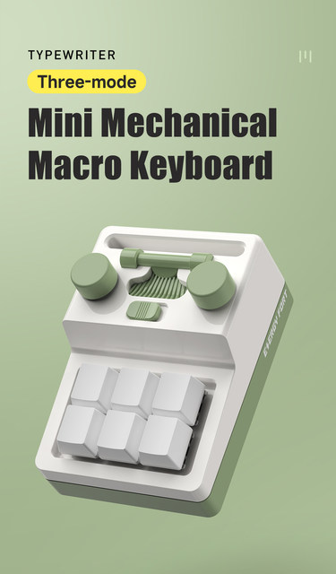
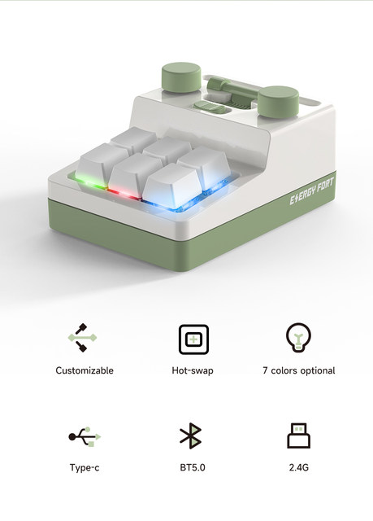
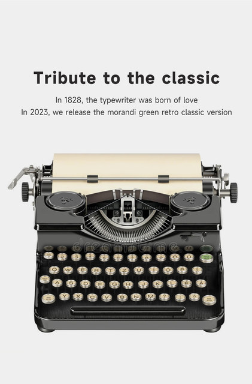
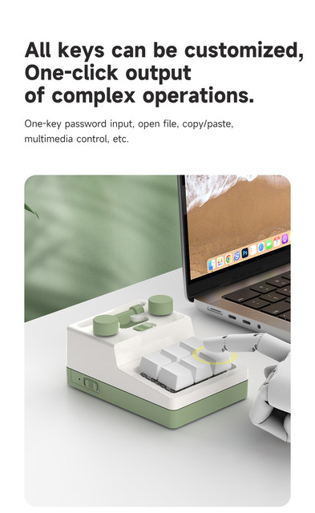
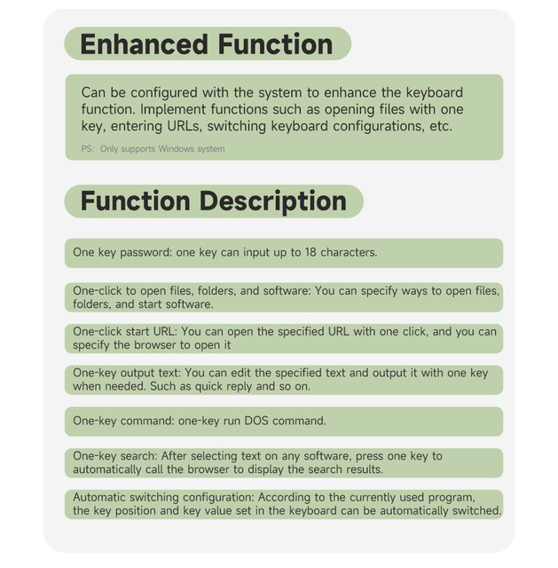
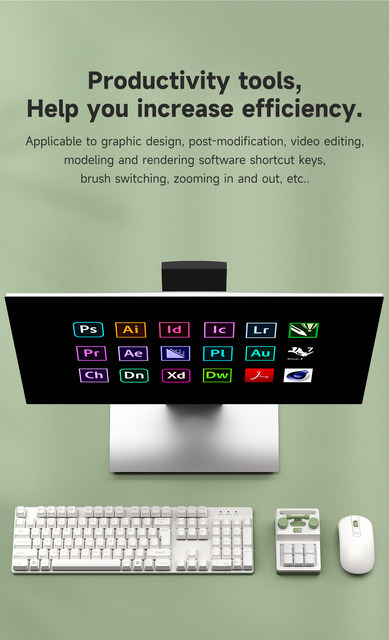
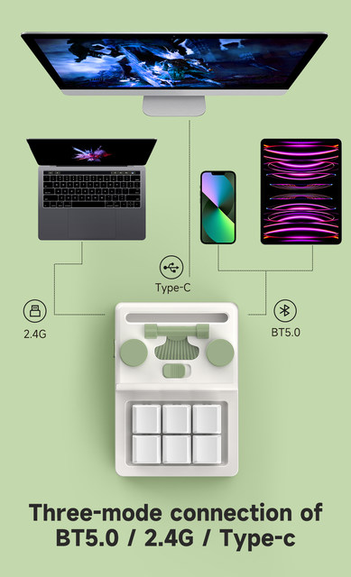
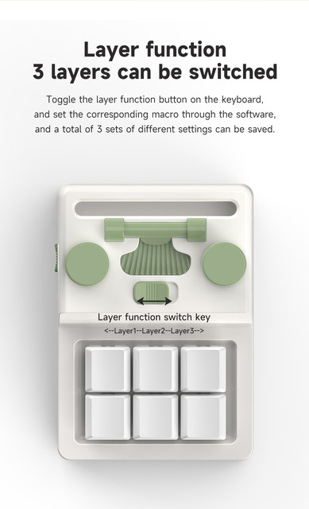
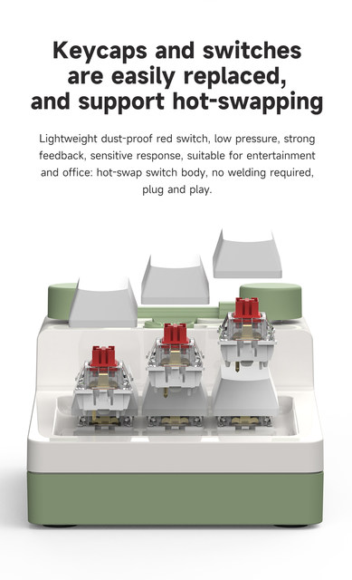
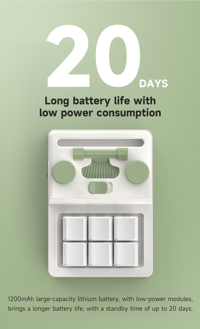
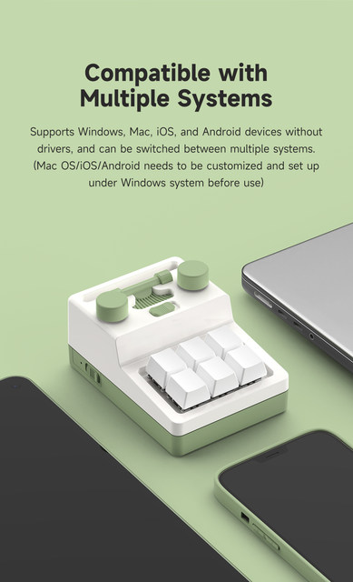
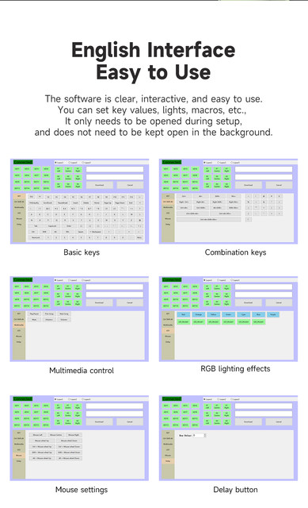
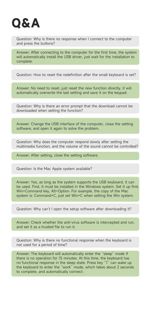
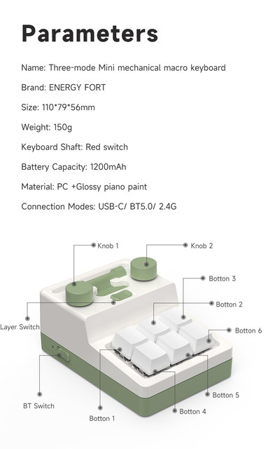